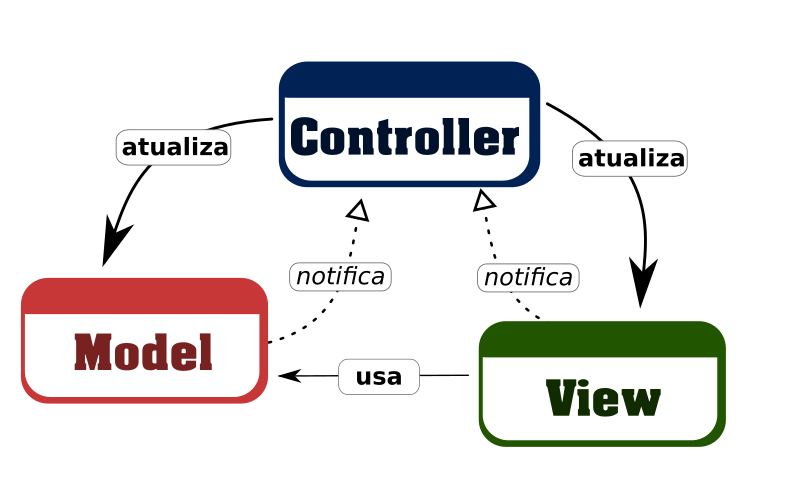

O padrão MVC
Saiba mais sobre o padrão MVC na Wikipédia. Aqui eu vou só tecer alguns comentários e apresentar o meu ponto de vista com relação ao assunto aplicado exclusivamente ao desenvolvimento de front-end com jQuery e JavaScript puro.
Tento reunir aqui o que é, para mim, a base, a essência, e como podemos adotar o padrão MVC para separar as responsabilidades de nossa aplicação front-end.
Não tente fazer comparações com Frameworks/Bibliotecas como Angular, VueJS e Ember por exemplo. Esses também tratam o padrão MVC, mas estão mais ligados ao padrão MVVM além de nos fornecer inúmeras ferramentas para suportar SPA's, mas esses são outros assuntos, aqui focamos no entendimento do padrão MVC para front-end Web.
Você pode desenvolver uma aplicação usando o padrão MVC sem precisar de um Framework para isso.
Um pouco de teoria
Visto que o MVC é um padrão de arquitetura que se utiliza do modelo em camadas para organizar suas peças, e que define explicitamente 3 (três camadas), são elas:
- Model (modelo)
- View (visão)
- Controller (controlador)
Pra mim, o desenho que melhor representa essa arquitetura é esse:
Aqui o mais importante não é você saber em que camada fica o código que o usuário vê (view) ou onde ficam seus objetos de modelo (model), e etc. O mais importante é você saber como as camadas interagem entre si.
Esteja atento as setas:
Essa seta indica que uma camada é a responsável por atualizar o conteúdo de outra camada. Em outras palavras, tem o controle da outra camada (por isso a seta sólida).
Essa seta indica que uma camada é responsável por notificar ações e mudanças que ocorreram em seu conteúdo a outra camada, e que não conhece nem tem controle sobre a outra (por isso a seta tracejada).
Essa seta indica que uma camada usa os dados de outra camada, e apesar de não controlá-la, conhece sua estrutura. Podemos dizer que tem acesso de leitura à outra camada (por isso a seta sólida, porém menos acentuada).
Vejamos então as responsabilidade de cada camada:
Model
A camada de modelo é a responsável por notificar a camada Controller de qualquer mudança em seu conteúdo. Essa é controlada exclusivamente pela camada Controller.
View
A camada de visão é a responsável por notificar a camada Controller de qualquer interação que o usuário faz em seu conteúdo. Ela conhece e usa os dados da camada Model, e também é controlada exclusivamente pela camada Controller.
Controller
A camada de controle é a responsável por atualizar a camada Model e View. Também é a responsável por direcionar o fluxo entre as interações na camada de visão e as mudanças na camada de modelo. Em outras palavras: "Controla e orquestra tudo".
De que vale essa teoria?
Essa teoria não serve de nada se você não consegue aplicá-la em seus projetos, e você consegue aplicar MVC em projetos jQuery e/ou JavaScript puro se simplesmente não violar algumas regras que o MVC nos impõe. Se você conhece e obedece essas regras durante o desenvolvimento de sua aplicação, pode dizer que está construindo uma aplicação com a arquitetura MVC.
E que regras são essas?
Regra 1: Um modelo não atualiza a visão quando sofre alteração. Ao invés disso, notifica o controlador para que ele decida o que fazer.
Até porque Model não conhece nem controla View, além de, é claro, um único modelo poder ser representado por N views.
Regra 2: Uma visão não altera o estado do modelo quando o usuário interage pedindo isso. Ao invés disso, notifica o controlador para que ele decida o que fazer.
Regra 3: Uma visão não altera a si própria. Ao invés disso, suas mudanças de visão são reflexos das mudanças do modelo. Sua única responsabilidade é representar o estado atual de um modelo em um meio específico.
Regra 4: O controlador não deve atualizar os detalhes da visão por ela.
Ao invés disso, deve requerer uma visão atualizada do modelo que tem em mãos.
Essa é uma responsabilidade da própria camada de visão, afinal ela é que conhece os
detalhes do meio a que a informação precisa ser apresentada.
Um exemplo prático
Vamos usar um exemplo bem simples pra demonstrar como seria construí-lo quebrando as regras do MVC a princípio, e em seguida ir corrigindo para atender a todas as regras e finalizar com o exemplo NÃO quebrando as regras do MVC.
O exemplo é esse:
Uma tela onde o usuário pode informar seu nome no GitHub através de um campo de texto, e uma imagem que mostra o avatar desse usuário no GitHub. Sempre que ouver interação com o campo de nome do usuário, a parte de visão do avatar deve ser atualizada pra representar a informação.
Nessa demonstração abaixo, temos o nosso resultado final em funcionamento:
Um "pitaco" sobre o modelo
O modelo não se trata de uma classe do tipo FormularioModel, ou FormViewModel,
apesar de normalmente ser representado por coisas desse tipo.
Mas antes de mais nada: "O modelo é todo o dado que faz sentido pra que você consiga exibir determinada
informação", porque isso será usado para firmar um contrato entre as partes envolvidas.
Dependendo da linguagem/plataforma que você está utilizando, isso pode ser uma classe, um arquivo, um tipo, um módulo, etc. Mas isso são detalhes, e não a essência, e o que importa é você conhecer que dados são necessários para que consiga exibir algum tipo de informação útil em um meio específico.
No nosso exemplo, temos um NOME e uma IMAGEM, que nesse caso é na verdade
a URL de uma imagem.
Independente de você usar uma classe ou um objeto para isso,
deve concordar comigo que isso aqui representa claramente o nosso modelo:
Então vamos acordar que isso é tudo que precisamos para conseguir
desenvolver essa funcionalidade.
Voltando ao exemplo
Você que já conhece e usa jQuery no seu dia-a-dia, sabe que consegue construir essa funcionalidade facilmente com um código básico. Então vamos ao código de nossa primeira solução.
Solução 1
Uma nota sobre o código de exemplo:
Pronto, está funcionando! Mas com esse código estamos quebrando as regras do MVC,
mas especificamente a regra 3.
Porque nossa visão está reagindo a uma interação do usuário e refletindo isso em outra parte da visão
diretamente sem notificar essa mudança ao modelo.
E se houvesse mais outra parte da visão que dependa também dessa parte do modelo?
Teríamos que adicionar o tratamento também no onkeyup até isso ficar insustentável?
Solução 2
Então tá! Vamos ver outra solução.
Podemos criar um objeto para representar o modelo e criar também um método pra atualizar a visão
e pronto! Com isso a visão não altera a si mesma.
Só que agora estamos quebrando 2 (duas) regras ao mesmo tempo. Porque a regra 1 diz que
um modelo não atualiza a visão, e o método que atualiza a imagem na visão está no objeto de modelo.
Também a regra 2 diz que a visão não altera o estado do modelo, e isso ocorre
quando estamos chamando model.changeName() diretamente de onkeyup na visão.
Solução 3
Então vamos a outra solução. Criemos um método de controle que possamos somente notificar, e ele ser o responsável por decidir essas coisas.
Quase deu, mas esse método de controle está atualizando os detalhes da visão, e isso é uma quebra da regra 4. Essa é uma responsabilidade da própria camada de visão, afinal ela é que conhece os detalhes do meio a que a informação precisa ser apresentada.
Solução 4
Então vejamos logo outra solução. Vamos criar um objeto de visão para que o controlador possa requerer a atualização.
Parece que resolvemos o problema! Então agora não é o modelo que está atualizando a visão, e a visão também não está mais atualizando o modelo, além de o controlador não ter mais que se preocupar com os detalhes da visão.
Façamos então uma conferência nas regras pra ver se estamos obedecendo a todas elas:
- Regra 1: Um modelo não atualiza a visão quando sofre alteração.
- Regra 2: Uma visão não altera o estado do modelo quando o usuário interage pedindo isso.
- Regra 3: Uma visão não altera a si própria.
- Regra 4: O controlador não deve atualizar os detalhes da visão por ela.
Parece que está tudo bem. Ou melhor: Estaria tudo bem se não fossem os "Ao invés disso...".
Quando há uma interação do usuário na visão alterando o nome, a visão está nofiticando o
controlador chamando o método onChangeName. Este método do controlador por sua
vez é que atualiza o modelo, e isso está correto, porém ao mesmo tempo já está adiantando
o trabalho visto que está com a faca e o queijo na mão e já aproveitou para atualizar
a visão chamando o trecho $('#avatar').attr('src', model.avatarUrl).
Aqui apesar de ser o controlador que está atualizando o modelo e também atualizando a visão, e essas são realmente responsabilidades do controlador.
Cadê a separação de responsabilidades?
Esse método onChangeName deveria ser responsável somente por tratar de atender a
notificação feita pela visão, ou seja, algo foi alterado (o nome) e isso deve refletir no modelo.
Aqui o trabalho deste método termina quando ele atualiza o modelo.
O modelo por sua vez é que deveria "notifica o controlador para que ele decida o que fazer"
Em resumo, quase conseguimos atender todas as regras. Ficamos assim:
-
Regra 1 (50%):
Um modelo não atualiza a visão quando sofre alteração.
Ao invés disso, notifica o controlador para que ele decida o que fazer. - Regra 2 (100%): Uma visão não altera o estado do modelo quando o usuário interage pedindo isso. Ao invés disso, notifica o controlador para que ele decida o que fazer.
-
Regra 3 (50%):
Uma visão não altera a si própria.
Ao invés disso, suas mudanças de visão são reflexos das mudanças do modelo.
Ficou faltando o modelo ser o responsável por notificar o controlador de sua mudança para que esse decida o que fazer. E com isso podemos dizer que toda a alteração na visão é reflexo das mudanças do modelo.
Solução 5
Agora sim temos um exemplo que NÃO quebra as regras do MVC.
- Regra 1: Um modelo não atualiza a visão quando sofre alteração. Ao invés disso, notifica o controlador para que ele decida o que fazer.
- Regra 2: Uma visão não altera o estado do modelo quando o usuário interage pedindo isso. Ao invés disso, notifica o controlador para que ele decida o que fazer.
- Regra 3: Uma visão não altera a si própria. Ao invés disso, suas mudanças de visão são reflexos das mudanças do modelo.
Observe o método model.changeName(), ele agora é o responsável por alterar
o nome, e de quebra já atualiza a URL e tira essa responsabilidade do controlador, visto
que é algo realmente relacionado ao modelo, ou seja, a URL é um valor calculado à partir
do valor name do próprio modelo. Esse já se encarrega de notificar o controlador
da sua mudança que sofreu através da chamada onUpdateModel(this).
Observe que a visão está lá somente para apresentar os dados, o máximo que ela faz é
notificar o controlador quando o campo nome sofreu uma interação do usuário.
E foi o próprio controlador que configurou esse gatilho com o trecho
$('#nome').on('change', onChangeName).
Não existe nenhum código na própria visão que manipule a si mesmo para formatar como a informação deve representar o modelo. Ela somente reage as mudanças obedecendo ao controlador.
Isso é MVC!
Sei que talvez você esperava mais coisas, mas esse código realmente obedece ao padrão MVC de arquitetura. Com isso queremos dizer que desenvolver aplicações MVC é uma questão de entender os princípios propostos por essa arquitetura.
Vamos voltar a dar uma olhada na nossa imagem do início e perceber como nosso código está seguindo rigorosamente o fluxo proposto pelo diagrama:
1. Primeiro quando o usuário altera o campo nome no componente de visão, esse
notifica o controlador de tal.
2. Em seguida nosso controlador decide que isso deve refletir em uma mudança no componente de modelo, e atualiza o modelo.
3. O componente calcula as mudanças e em seguida notifica o controlador de suas mudanças já passando o resultado final de seus cálculos e entrega um modelo "prontinho" para o consumo.
4. O controlador quando recebe essa notificação de mudança no modelo imediatamente atualiza o componente de visão para refletir exatamente o estado final do modelo.
Os detalhes
O resto são detalhes, e é exatamente isso que os Frameworks e Bibliotecas de MVC nos entregam, a implementação de vários detalhes que tornam nossa vida mais fácil. Porém o entendimento do padrão MVC nos faz construir aplicações mais fluidas e manuteníveis mesmo sem o uso de um desses frameworks/bibliotecas. Nesse exemplo que apresentamos aqui, nós conseguimos com o uso de puro JavaScript e do "Velho e Querido jQuery" implementar uma peça de software usando essa arquitetura.
Talvez a falta das classes Model, View e Controller
tenha te deixado desconfortável pelo seu costume com Frameworks diversos, mas entenda que isso
são só utilitários para nos ajudar a ser mais produtivos.
Mas pra não te deixar tão desapontado, vamos separar o nosso código melhor e deixá-lo mais profissional.